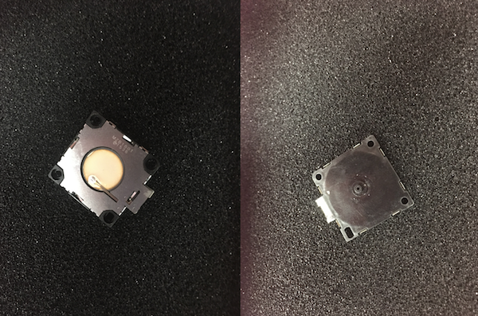
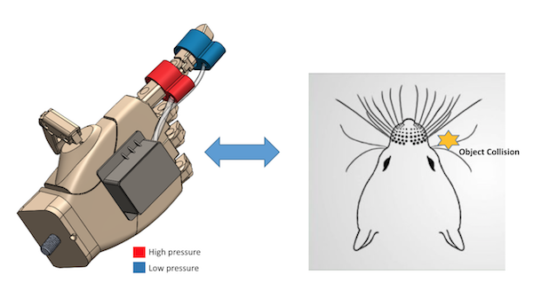

Human-Robot Haptic Interface
Overview
As part of my final project at Northwestern University, I am working with professor Mitra Hartmann in her research with rat whiskers. As the group has been studying the subject for years, they have researched and developed many interesting topics. Most notably, the group at Northwestern has developed a mechanical rat whisker capable of obtaining moment and force information. In an effort to exploit this data, my project aims at creating a human interface for the device. Specifically, I seek to design and build a model which will give humans control over an array of rat whiskers, and accurately and intuitively relate that information back to the user in the form of haptic feedback.
Early Prototyping
Early stage research has been focused on the ability to give the user feedback which can relate back a sense of magnitude and position given whisker data. In order to do this, small micropumps will apply pressure at several different locations throughout a person’s fingers, when a rat whisker comes into contact with a surface activating the correct pump will give a sense of the forces being felt in a specific location (as shown below).
|  |  |
The pump shown in the figure is a piezoelectric pump, which can be, when supplied with an AC current at its resonant frequency (of 26KHz), used to blow air into a small cavity. In this case the pump blows into a small hollow ring which wraps around the finger as seen. With the use of sensory data from the whiskers and a pressure feedback loop at the hand an intuitive feel for what an array of rat of rat whiskers is sensing remotely can be created.
Initial prototyping has incorporated creating a driver for the pumps from a PIC32 microcontroller, as well as molding numerous hollow rings in order to test which is best capable of performing the task.
Future Work
The project is only in its early stages. In the following months I hope to continue the goal stated in the overview. The next immediate step is to create a full control loop using a micropump attached to a pressure sensor. With the use of a driver for the piezo, and a microcontroller, the design should be capable of providing haptic feedback to a user while actively controlling the magnitude of the forces sensed through a computer.
Further work will try and include the rat whiskers. A system which will allow a user to actively move the devices is the second big step in the project. The final step will be to integrate the two and, once fine tuned, bring together several of these models to, as is the goal, allow a person complete haptic feedback.